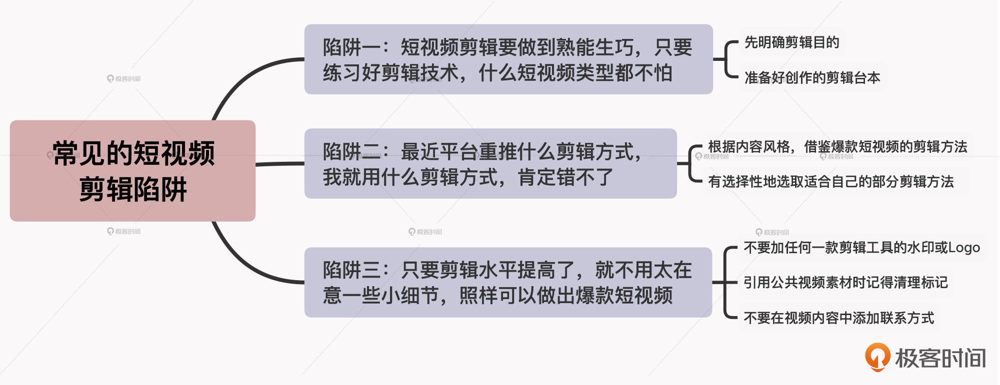

- 00 开篇词 短视频时代下，怎么把握好变现风口？.md.html
- 01 爆款短视频的底层逻辑：用心拍的短视频为啥没人看？.md.html
- 02 爆款短视频的底层逻辑：如何轻松打造自我特色？.md.html
- 03 精益创业法：如何快速跨过从0到1这道坎？.md.html
- 04 SWOT法：这么明显的个人优势你为啥就是看不到？.md.html
- 05 效用函数法：如何用量化的方式进行高效创作？.md.html
- 06 二次创新实验法：如何打造个人的差异化定位？.md.html
- 07 平台定位：如何选择最适合自己的创作平台？.md.html
- 08 如何快速找到各大短视频平台的正确切入点？.md.html
- 09 选题（上）：如何利用思考清单找到合适选题？.md.html
- 10 选题（下）：如何为不同的内容定制合适选题？.md.html
- 11 优劣分析法：如何快速筛选适合创作的视频素材？.md.html
- 12 标题（上）：如何利用微创新巧妙找到爆款标题？.md.html
- 13 标题（下）：如何用对号入座的方式抓住标题亮点？.md.html
- 14 视频封面（上）：如何快速抓住用户注意力？.md.html
- 15 视频封面（下）：如何传递最有价值的信息？.md.html
- 16 视频剪辑：如何轻松掌握视频化剪辑的三大公式？.md.html
- 17 效果反馈法：剪辑很容易，为什么你却一直学不会？.md.html
- 18 剪辑对比（上）：如何避开常见的短视频剪辑陷阱？.md.html
- 19 剪辑对比（下）：如何利用剪辑技巧提升视频质量？.md.html
- 20 拉片法：用电影创作的方式学习爆款短视频运营技巧.md.html
- 21 用户留存率：为什么粉丝很多但忠实拥趸却很少？.md.html
- 22 点赞率（上）：如何有效提升短视频的点赞量？.md.html
- 23 点赞率（下）：三种方法轻松提升用户对内容的认可度.md.html
- 24 上瘾机制：为什么视频观看量很高却没人留言？.md.html
- 25 避坑指南：为什么很多短视频账号中途做不下去了？.md.html
- 26 如何找到适合自己的短视频变现模式？.md.html
- 27 多元化变现：如何明确不同创作阶段的变现任务？.md.html
- 28 多内容变现：不同内容的主打变现模式是什么？.md.html
- 结束语 一切成大事者，都是终身学习者.md.html
- 捐赠
18 剪辑对比（上）：如何避开常见的短视频剪辑陷阱？
你好，我是周维。
前面两节课，我们利用视频化剪辑的三大公式，了解了短视频剪辑的底层逻辑，并根据效果反馈法掌握了快速习得短视频剪辑技巧的四种方法。不过，在短视频剪辑的过程中，我们仍然会遇到一些陷阱，比如说：
- 我认为要做好短视频就要学会剪辑，但投入了大量时间去学习之后却发现，自己创作的短视频根本没有成为爆款，那剪辑对短视频创作的帮助究竟是什么呢？
- 由于各大短视频剪辑App中的特效、贴纸越来越多，所以平台重推什么剪辑功能，我就紧随其后，这应该没啥问题吧，可是最后为什么自己的内容依然无人问津呢？
- 我的剪辑水平也还可以，作品的内容质量也还行，但为什么总是会因为内容中的Logo、二维码等一些小细节而受到平台惩罚？
说实话，之所以我们在学习或者做短视频剪辑时会陷入一些深坑、进入一些误区，最关键的因素就是没有考虑到整体的创作环境（包括内容主题、用户需求、平台规则等），只是为了剪辑而剪辑。一旦掉入了这些剪辑陷阱，就会只看到局部带来的狭隘，而看不到我们需要真正解决的问题是什么，这样会让我们投入不必要的时间成本，从而造成我们的内容创作水平一直停滞不前。
因此这节课，我就来给你分享一下如何在视频剪辑的过程中有效避开这些常见的陷阱，让你在学习剪辑的过程中少踩坑、少走弯路。
陷阱一：短视频剪辑要做到熟能生巧，只要练习好剪辑技术，什么短视频类型都不怕
我们知道，剪辑是短视频创作中非常重要的组成部分，但它并不是决定短视频成为爆款的关键因素。在我看来，将一个事物夸大成唯一的存在或成功要素时，往往背后就隐藏着陷阱。对于短视频创作来说，剪辑其实不只是一种技术手段的问题，而是如何利用剪辑来服务好内容创作的问题。
这要怎么理解呢？我给你举个例子。我有个朋友是财经类内容的短视频创作者，他原本是在一家金融机构工作，能力很突出，也参与过很多重大金融项目的管理与运营。他刚开始创作短视频时，由于之前从没有接触过剪辑知识，因此认为自己最大的创作短板就是剪辑。如此一来，他就根据以往的学习技能的经验，得出了一个结论：只要付出时间去学习剪辑方法，一定能够熟能生巧，也一定能在短视频领域内成为真正的强者。
说实话，付出时间成本去学习是必须的，但是真正能成为一个剪辑高手的标准是什么？他似乎没有考虑过这个问题。
日本的认知科学家今井睦美在《深度学习》中提到：实现更好的学习，首先需要明确自己的学习目的。也就是说，我们必须搞清楚自己学习剪辑的目的是什么，这样才能真正学到有用的剪辑技巧。
我的这位朋友从基础剪辑教程开始，学习了几个月之后，认为自己差不多可以把控短视频的剪辑方向和风格了，然后每一次都是按照自己的想法随意去剪辑，并不会根据实际内容的需求，甚至为了凸显自己剪辑水平的高超，还刻意在作品中去炫技。
或许你会觉得，这样的作品剪辑质量肯定很高、肯定会赢得用户的喜爱。恰恰相反，他创作的一期内容中都是以剪辑技巧为重点，跟自己原本的以分享知识为核心的创作目的渐行渐远，最后视频的观看量、点赞量等数据都很低。这里我给你找了一个与他相似的短视频内容，你可以观摩一下。
所以，如果掉入了这种在剪辑认知上的陷阱，你除了会迷失内容创作上的主次之外，也不会了解什么样的剪辑手法适合自己的创作内容，从而也就无法真正做出合格的、高质量的作品。
那该怎么办呢？现在我就来给你介绍一下改进的方法，即要准备好创作的剪辑台本。
台本就是在舞台上使用的剧本，现在也作为拍摄视频时使用的流程记录，比如拍摄的场景、景别、机位、音效等。我们可以根据自己的实际需求，添加不同的内容元素。这样通过清晰、直观、具体的关键记录，我们就能够明确创作中每个环节的主要任务是什么。
而在剪辑层面，所谓的剪辑台本就是以创作台本内容为重点，将需要用到剪辑的地方标注出来。这样，我们也就能明确内容创作中每一部分的剪辑任务是什么，如此就可以避免踩一些不必要的坑，从而真正发挥剪辑对提升内容创作质量的作用。
那么剪辑台本都包括哪些内容呢？我认为主要有两点。
1. 根据创作台本，标注每部分内容可以采用的剪辑方式或手法。
我举个例子。假设我创作的是健康知识类短视频，那么我的创作台本就大致分为三个部分：引入一个用户会经常忽视的健康问题 + 分析该问题出现的原因 + 解决问题。而视频剪辑的目的，就是要让每部分的内容表达更淋漓尽致、更容易让用户接纳。
比如，现在我可以先来划分一下：
- 引入：该部分剪辑的目的是让问题更加突出，提高用户的重视度；
- 分析：该部分剪辑的目的是让分析的逻辑更加条理化，用户能清晰易懂；
- 解决问题：该部分剪辑的目的是提供的健康知识能够降低用户的阅读难度，让用户可以轻松上手操作。
这样在明确了剪辑目的之后，我可以接着思考下每部分内容用哪些剪辑手法来展现比较好，然后在台本上标注出来。
比如说，对于引入部分，我可以通过显著的文字、特效及背景音乐等剪辑手法，来提醒用户要意识到问题的严重性；对于分析问题的部分，我可以通过醒目的数字罗列手法来让讲述的逻辑更加清晰，还可以搭配一些具有提醒功能的贴纸，以及可以在每条分析的内容中插入合适的视频素材，来提升用户的观看体验。
而对于最后解决问题的部分，我可以通过醒目的黑屏加文字，也可以通过列清单、标注重点等方式，来帮助用户直观地认知到该问题最后的解决方案是什么。
2. 根据剪辑手法，确定最后的剪辑表现方式是什么样子的。
这一点实际上就是帮助自己减少在最后上手实操的阶段时，挑选那些眼花缭乱的剪辑表现方式的时间。比如说，我要通过醒目的数字罗列手法来明晰讲述逻辑时，可以先在剪辑台本上标注出两种可以选择的剪辑方式：文字标粗、形象化的贴纸提醒。
这样后续我在剪辑时，就可以直接把这两种剪辑方式依次放到内容中，然后看看哪一个更合适整体的创作风格，就采用哪一个即可。
陷阱二：最近平台重推什么剪辑方式，我就用什么剪辑方式，肯定错不了
我相信很多人在做剪辑的时候，都踩过这个坑，也就是看到一段时间内平台上流行的剪辑风格，或者是当平台重推一款或几款剪辑特效时，就会紧随其后，认为必定能得到平台更多的推荐。
这种方法也并没有错。站在平台的角度来说，当新推出一种剪辑方式时，目的就是希望能被更多的用户使用、普及。所以，我们就会觉得先做了吃螃蟹的人，就一定更容易受到平台流量的倾斜。
但实际上，这是一个很大的误区。要想获取更多的流量倾斜，你需要参与官方推出的，与该剪辑方式相关的话题、活动，而并非只是单纯地在内容创作中使用这种剪辑方式而已。目前短视频平台的算法机制还没有强大到可以识别出你视频中所采用的剪辑手法，它只能通过比赛、话题等圈地的方式来收集和推荐相关的视频作品，这点你一定要注意。
那我们要如何避免这种跟风式的剪辑方法呢？我认为有两点。
1. 根据自身的内容风格，借鉴爆款短视频的剪辑方法。
现在随着技术的成熟、剪辑门槛的降低，各种剪辑功能越来越多，但要注意，剪辑手段只是辅助内容创作，不能为了剪辑而剪辑。所以，我们可以先在热门的短视频平台上，根据自己的内容风格，观察下一些爆款短视频的剪辑手法是什么，然后加以利用。
我举个例子。在抖音上有一个搞笑类的短视频创作者“搞笑院长”，内容风格属于无厘头的类型，他会通过剪辑手段来呈现各种无厘头的笑点，比如在这期视频里，人物说完一段话后还会搭配夸张的笑声，以及搭配搞笑的音乐背景等。
如果我也是一个做搞笑内容的创作者，我就可以借鉴这样的剪辑方式。不过要注意，假设我是一个知识科普类的内容创作者，我也觉得这种剪辑手法比较受欢迎，想直接拿过来模仿复制的话，却是万万不可的。
因为我平时的创作风格是以场景化+专业知识解答为主，剪辑的目的主要是来辅助内容讲解，如果直接采用这种无厘头的搞笑剪辑手法，除了背离自己内容定位的初衷，恐怕也会失去更多信赖自己的用户。
所以，我们还要有选择性地选取能更好服务于自身内容的剪辑方法。
2. 有选择性地选取适合自己的部分剪辑方法。
这一点的意思就是，你可以把平台重推，或者当下流行的一个剪辑元素放入自己的内容创作中，这样既不会影响整体的创作风格，还会因为有当下流行的元素而受到更多用户的喜爱。
比如说，我是美食类的短视频创作者，我不可能把一个搞笑类的爆款短视频的剪辑方式、技巧应用到自己的内容中，但是并不妨碍我可以使用其中受欢迎的BGM、单个特效或者贴纸等，这些单独的元素反而可以为自己的作品增色不少。
陷阱三：只要我的剪辑水平上去了，就不用太在意一些小细节，照样可以做出爆款短视频
在我这么多年的工作经历中，遇到了太多创作者因为一些剪辑上的小细节、小问题，导致作品审核不通过，或者是作品发布之后没多久就被下架，甚至还有很多受到了封号的处理。这些创作者本身的剪辑水平其实都还可以，大部分也都是从0开始学起，对于整个视频剪辑的质量把控还不错，但是就因为视频中存在一些小瑕疵而拖累了整个作品。
我给你举个例子。有个三农类的短视频创作者，平时拍摄内容之后，一般都是通过手机剪辑App来完成，上面不仅可以自动处理字幕，还能调整画面的质感，搭配不同的滤镜。他觉得自己对于短视频的剪辑学习得差不多了，但有一段时间他拍摄的内容刚发布不久，就遭到了下架处理，官方平台给出的处理意见是因为违规操作原因导致。
他一直找不到具体的原因所在，后来我看了之后，发现有一次他在介绍一种植物时，搭配的图片及视频素材上，都带着其他平台的Logo，他重新处理了这一段之后，发布的内容果然没有再次遭到下架处理。
请注意，很多短视频创作者可能都会觉得，这就是一个小问题，不用太在意，但是现在随着各个平台加大了保护原创内容、打击虚假作品的力度，如果视频内容中出现了不是自己平台的Logo、水印等印记，都会被后台机器判定为低质作品。
所以你在剪辑中，一定要注意这样的细节问题。你可以通过以下三点来进行处理：
- 首先，你每次剪辑完作品之后，切记不要加上任何一款剪辑工具的水印或者Logo。有很多手机端的剪辑工具，需要你在“设置”中取消掉“尾部加Logo”的选项，这样输出的高清视频上传到任何一个平台，都不会出现剪辑违规的问题。
- 其次，当你在内容中引用了一些公共的视频素材时，如果上面有其他平台的标记，记得先将标记清理一下，或者可以打上马赛克。这个方法可以直接从各种剪辑App的教程中查看到，我这里就不详细说了。
- 还有一点，当你刚开始剪辑短视频的时候，尽量不要在内容中添加一些联系方式类的内容，否则会被平台判定为广告属性，遭到下架处理。这类联系方式包括电话号码、二维码、微信号等，具体的内容，你也可以从各个平台上的用户协议或者官方的剪辑教程中去查看。
小结
对于短视频剪辑的初学者而言，会很容易陷入今天所说的这三个陷阱：单纯学习剪辑技术而忽略了如何从整体内容出发去剪辑、跟着流行的剪辑方式去剪辑、不在意一些剪辑的小问题。这节课，我给你分享了一些避坑指南。此外你还要注意，在学习剪辑的时候，不能只盯着一个操作方法，而是要站在不同维度去看待短视频剪辑这件事。
最后我想说的是，随着短视频的普及，剪辑的门槛会越来越低，我们只需要通过简单地学习就能剪辑好自己的内容。不过，要真正想成为一个剪辑大神，我们还是需要通过长时间的磨练才行，而在这里，失败的经验其实更重要。

思考题
在学习了今天的内容之后，欢迎你在留言区分享自己在剪辑方面遇到的难题，或者是曾经遭遇过的“陷阱”，我们一起交流讨论。
如果觉得今天的内容对你有所帮助，也欢迎分享给更多的朋友。好了，这节课就到这里，我们下节课再见吧！
© 2019 - 2023 Liangliang Lee. Powered by gin and hexo-theme-book.